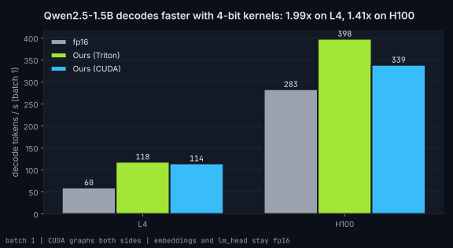
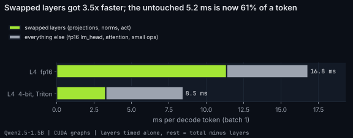

End to end: Qwen2.5-1.5B-Instruct
All attention and MLP projections use round-to-nearest 4-bit weights (group 128) and our kernels. Embeddings, lm_head, attention (SDPA) and RoPE stay in fp16 on both sides. Both sides run the same small runner under CUDA graphs with a static KV cache, so the only difference is the kernels.
Decode speed

Where a decode token's time goes
The swapped layers are timed alone in their own CUDA graph; the rest is the full step minus that. The fp16 lm_head (151936 x 1536) alone reads 0.47 GB per token, so it becomes the next thing to fix.

L4
| backend | decode tok/s | swapped layers ms/token | prefill tok/s (T: tok/s) | WikiText-2 ppl | linear weights GB |
|---|---|---|---|---|---|
| fp16 | 59.5 | 11.36 | 128: 5743, 512: 11782, 2048: 12409 | 10.654 | 2.62 |
| ours | 118.2 | 3.28 | 128: 7683, 512: 11573, 2048: 12346 | 11.900 | 0.70 |
| ours_cuda | 114.4 | 3.62 | 128: 7650, 512: 11545, 2048: 12262 | 11.900 | 0.70 |
| w4_ref | - | - | - | 11.901 | 0.70 |
Runner check against Hugging Face: max abs logit difference 0.034 on the prompt; perplexity 10.654 vs HF 10.654. Greedy tokens are identical for the first 14 of 32 steps, then a near-tie flips and the texts drift apart (expected from fp16 rounding order).
Greedy outputs (L4)
Greedy decoding, cut at 64 new tokens. The 1.5B model gets dates wrong in both versions; 4-bit changes the wording, not the gist.